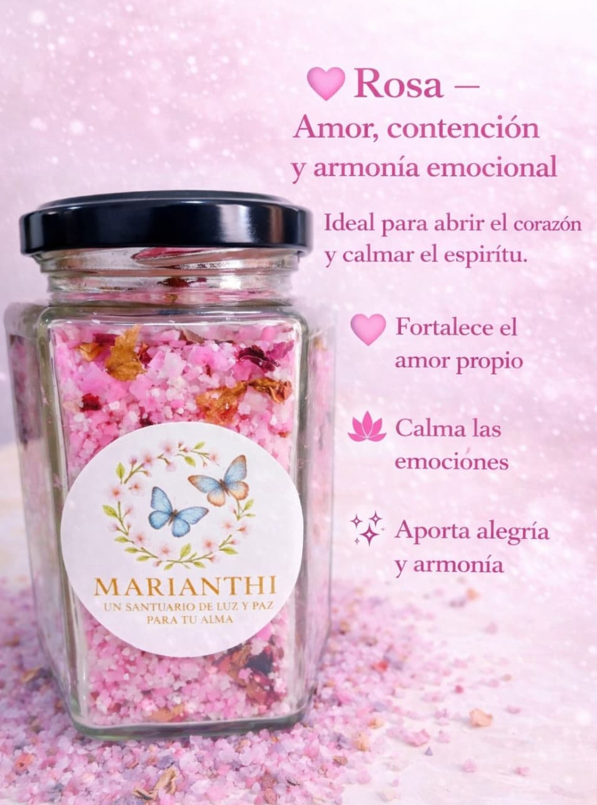
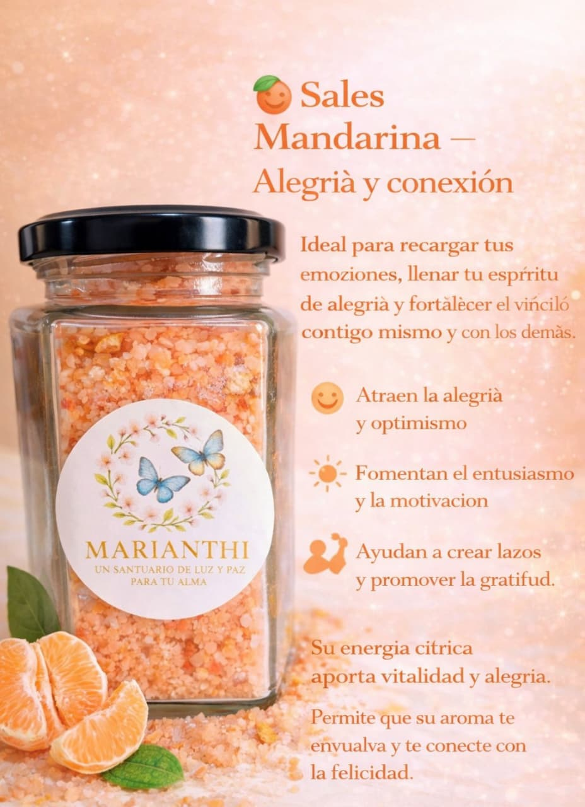
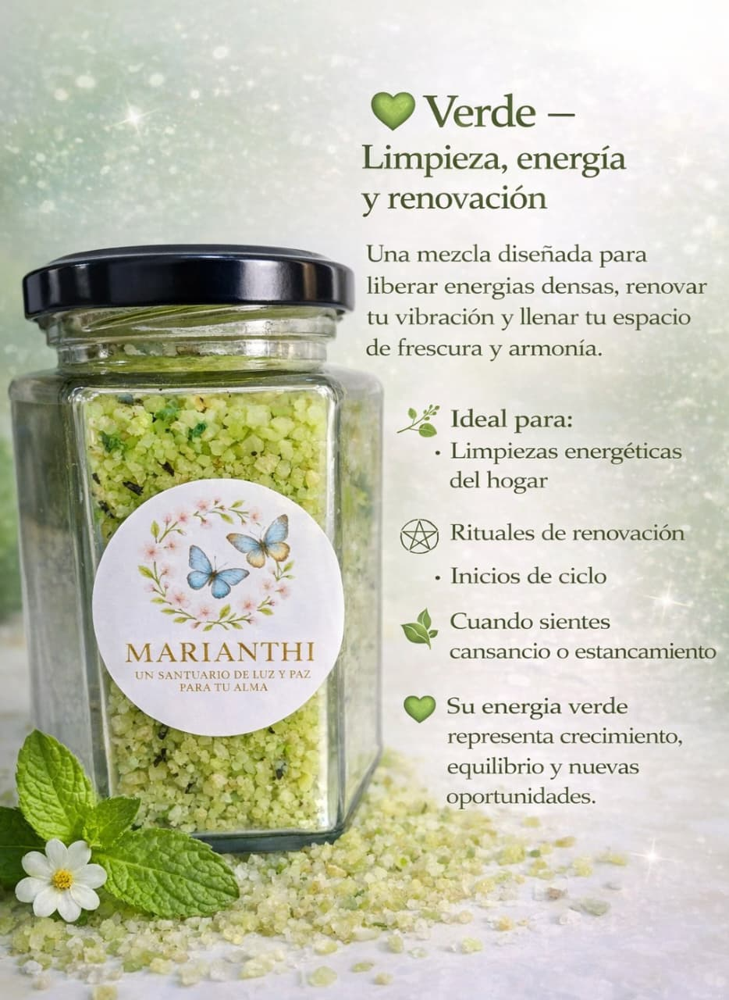
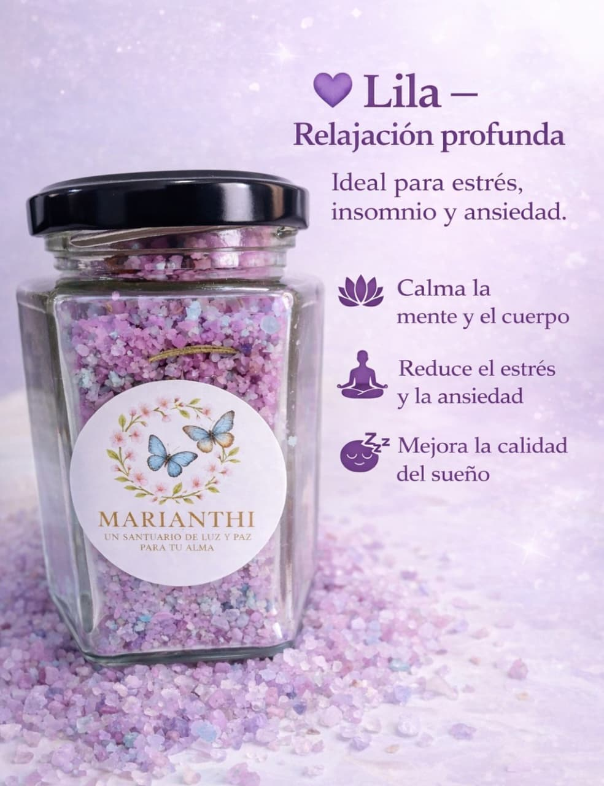

Terapia Reiki
Canaliza energía universal para promover relajación profunda, armonía y bienestar.
Estrés y ansiedadEquilibrio
Terapias holísticas presenciales en Tlajomulco de Zúñiga (zona Guadalajara), además de productos artesanales armonizados con Reiki para tu bienestar.
Por el momento, toda la información y pedidos se gestionan por WhatsApp. Productos con entrega local (sin envíos por ahora).
Sesiones presenciales por cita en Tlajomulco de Zúñiga. Agenda o pide información por WhatsApp.
Canaliza energía universal para promover relajación profunda, armonía y bienestar.
Uso terapéutico de imanes para equilibrar el campo energético y apoyar bienestar físico.
Terapia con velas especiales para armonizar, liberar energía y brindar ligereza y claridad.
Esencias florales para equilibrar emociones, fortalecer autoestima y acompañar procesos.
Aceites esenciales para apoyar relajación, descanso, estado de ánimo y concentración.
Armonización de centros energéticos para liberar bloqueos y promover estabilidad emocional.
Limpieza energética para soltar cargas emocionales, recuperar vitalidad y sentir ligereza.
Lectura consciente enfocada en guía y crecimiento personal: claridad y autoconocimiento.
Elaboradas de forma artesanal. Entrega local en la zona (sin envíos por ahora). Pedidos por WhatsApp.

Ideal para abrir el corazón, calmar emociones y fortalecer amor propio.
Pedir por WhatsApp →
Para recargar emociones, elevar ánimo y promover gratitud y optimismo.
Pedir por WhatsApp →
Para liberar energía densa, renovar vibración e iniciar nuevos ciclos con frescura.
Pedir por WhatsApp →
Ideal para estrés, insomnio y ansiedad. Apoya la calma y el descanso.
Pedir por WhatsApp →Por el momento no se realizan envíos. La entrega es local y se coordina directamente por WhatsApp.
Acompaño procesos de sanación desde la experiencia, con respeto y humanidad.
Mi camino espiritual comenzó en un momento de profundo dolor. A los 24 años viví la pérdida de mi hijo, y esa herida me llevó a buscar una forma real de sanación. La metafísica fue mi primer sostén; después estudié Semiología de la Vida Cotidiana y comprendí que sanar es un trabajo interno constante. Más adelante llegó el Reiki, y con él una nueva forma de acompañar y sostener. Hoy acompaño procesos de sanación porque sé lo que es sentirse rota… y también sé que la luz interior puede volver a recordarse.
Mi camino espiritual no comenzó por curiosidad… comenzó por una herida profunda.
A los 24 años viví la experiencia más dolorosa de mi vida: la pérdida de mi hijo. Ese momento marcó un antes y un después.
La tristeza se convirtió en depresión, el vacío parecía interminable y la vida perdió sentido por un tiempo.
Pero en medio de esa oscuridad apareció mi primer encuentro con la metafísica. No llegó como una moda ni como un interés pasajero;
llegó como una tabla de salvación. Fue el primer paso hacia mi sanación interior. Comprendí que el dolor podía transformarse en conciencia,
y que dentro de mí existía una fuerza que aún no conocía.
Más adelante estudié Semiología de la Vida Cotidiana. Ahí entendí que la sanación no es un evento, no es un curso, no es una terapia aislada…
es un trabajo interno constante. Es una responsabilidad personal que se vive las 24 horas del día, los 365 días del año. Aprendí a observar mis
pensamientos, mis emociones y mis elecciones.
Después llegó el Reiki. Y hoy puedo decir que la vida, en su infinita sabiduría, me estaba preparando.
A los 33 años, mi esposo enfermó de leucemia mieloblástica aguda. Fueron dos años de profunda prueba espiritual.
Dos años donde el miedo, la esperanza, la incertidumbre y el amor convivían en el mismo espacio.
El Reiki se convirtió en sostén. Mis maestros fueron guía. Y cada día aprendí algo esencial: valorar el instante presente,
respetar el camino de cada alma y aceptar que no todo está bajo nuestro control, pero sí nuestra actitud ante lo que vivimos.
En ese mismo periodo llegó a mi vida Un Curso de Milagros. Y ahí comprendí una verdad que transformó mi forma de existir:
Siempre podemos elegir. Ante cada circunstancia solo hay dos caminos: lo disfrutas o lo padeces.
Cuando mi esposo trascendió, el dolor volvió a tocar mi vida… pero esta vez yo ya no era la misma mujer de años atrás.
Había aprendido a mirar el sufrimiento con otros ojos. Había aprendido a elegir.
Y en medio del duelo, descubrí con claridad mi vocación. Entendí que todo lo vivido no era castigo, era preparación.
Que cada pérdida me había llevado más profundo hacia mi propósito. Que mi historia no era solo para sobrevivirla, sino para compartirla.
Hoy acompaño procesos de sanación porque sé lo que significa sentirse rota. Sé lo que es atravesar la noche oscura del alma.
Y también sé que dentro de cada ser humano existe una luz intacta esperando ser recordada.
Mi misión es acompañarte a descubrir tu propia luz, a reconciliarte con tu historia y a caminar en paz con tu mundo interno y externo.
Porque la sanación no es olvidar lo que duele… es transformarlo en conciencia, amor y propósito. 💜
Tlajomulco de Zúñiga (zona Guadalajara) · Atención por cita.
Si prefieres, copia y pega este mensaje en WhatsApp:
Hola Marianthi, me gustaría agendar una sesión presencial en Tlajomulco o pedir información sobre (terapia/producto). Gracias.